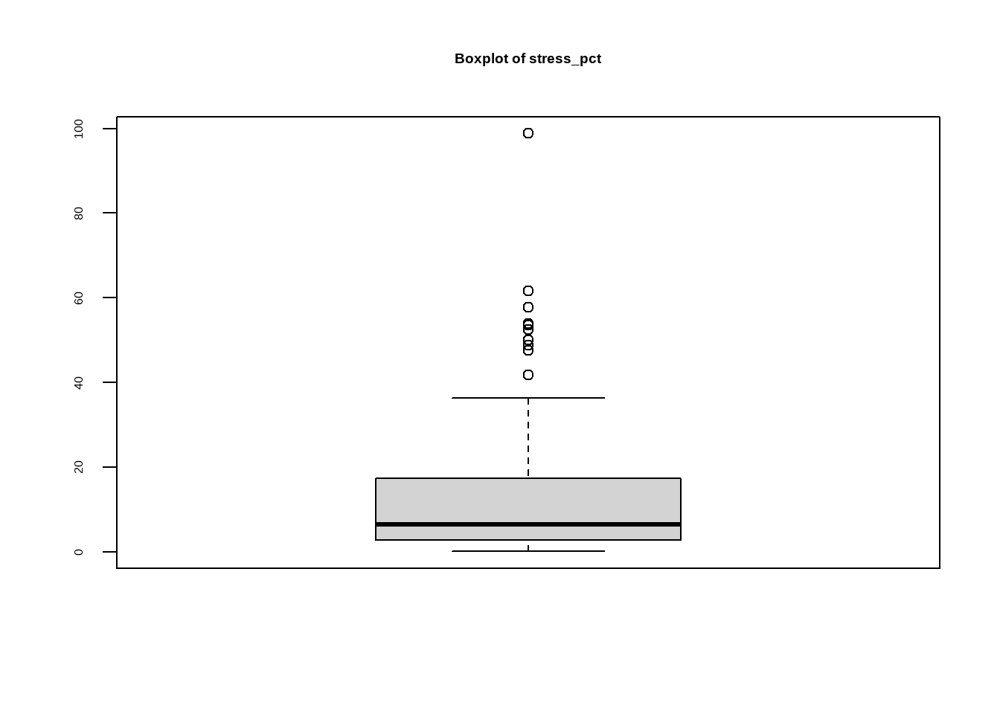
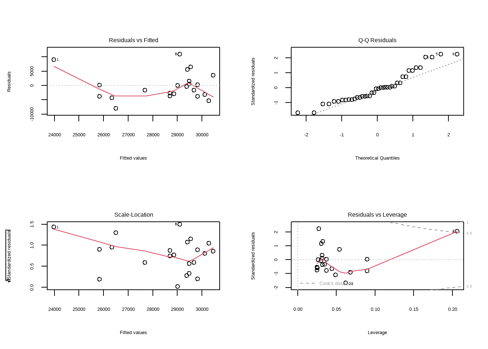
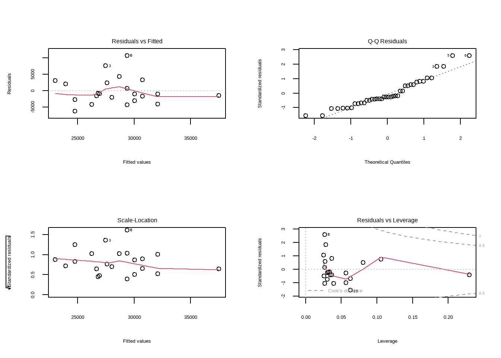

Analyzing Parasites Killing Bee Colonies in Arizona From 2015 - 2021
Intro
Two national datasets regarding bee populations (“colony.csv”) and stressors causing bee population decline (“stressor.csv”) were analyzed for the purposes of analyzing and predicting liner regression. Data in both datasets have been categorized based on season and the two main culprits leading to population decline are “Varroa mites” followed by “Other pests/parasites”.
Varroa mites are parasites that feed off the bodily fluids of adult bees and younger, newborn bees within a bee population, leading to a significant decline in bee population across the entire nation. This assignment looks to analyze the linear affect that this parasite specifically has on the Arizona bee population from 2015 - 2021.
Data Preprocessing: Import Packages & Two Datasets
Installing package into 'C:/Users/kendallbeaver/AppData/Local/R/win-library/4.3'
(as 'lib' is unspecified)
Warning: package 'ggplot' is not available for this version of R
A version of this package for your version of R might be available elsewhere,
see the ideas at
https://cran.r-project.org/doc/manuals/r-patched/R-admin.html#Installing-packages
Warning: unable to access index for repository http://www.stats.ox.ac.uk/pub/RWin/bin/windows/contrib/4.3:
cannot open URL 'http://www.stats.ox.ac.uk/pub/RWin/bin/windows/contrib/4.3/PACKAGES'
Warning: 'BiocManager' not available. Could not check Bioconductor.
Please use `install.packages('BiocManager')` and then retry.
Warning in p_install(package, character.only = TRUE, ...):
Warning in library(package, lib.loc = lib.loc, character.only = TRUE,
logical.return = TRUE, : there is no package called 'ggplot'
Warning in pacman::p_load(tidymodels, dplyr, tibble, tidyverse, ranger, : Failed to install/load:
ggplot
# Import two correlated datasets, "colony" and "stressor": # Read colony data (dataset is from 2015 - 2021)colony <-read_csv(here('./data/colony.csv'))
Rows: 1222 Columns: 10
── Column specification ────────────────────────────────────────────────────────
Delimiter: ","
chr (2): months, state
dbl (8): year, colony_n, colony_max, colony_lost, colony_lost_pct, colony_ad...
ℹ Use `spec()` to retrieve the full column specification for this data.
ℹ Specify the column types or set `show_col_types = FALSE` to quiet this message.
arizona_colony <-filter(colony, state %in%"Arizona")arizona_colony
Rows: 7332 Columns: 5
── Column specification ────────────────────────────────────────────────────────
Delimiter: ","
chr (3): months, state, stressor
dbl (2): year, stress_pct
ℹ Use `spec()` to retrieve the full column specification for this data.
ℹ Specify the column types or set `show_col_types = FALSE` to quiet this message.
arizona_stressor <-filter(stressor, state %in%"Arizona")arizona_stressor
# Don't impute April-June 2019, and remove row, as this is only row with null values and entire row of data wasn't collected: arizona_colony %>%na.omit()
year months state stressor
Min. :2015 Length:156 Length:156 Length:156
1st Qu.:2016 Class :character Class :character Class :character
Median :2018 Mode :character Mode :character Mode :character
Mean :2018
3rd Qu.:2019
Max. :2021
stress_pct
Min. : 0.10
1st Qu.: 2.75
Median : 6.50
Mean :12.84
3rd Qu.:17.35
Max. :98.80
NA's :17
# Analyze "stress_pct" distribution with a box plot:boxplot(arizona_stressor$stress_pct, main ="Boxplot of stress_pct")

# "Varroa mites" are having the main effect on the declining AZ bee population from a few seasonal months in 2015-2019, followed by "Other pests/parasites" in April-June 2016, then back to "Varroa mites from a few seasonal months in 2016-2018.
Data Preprocessing: Combine Both Datasets Based on Population Count and Stressors
# First filter "Stressor" dataset for top 2 stressors then concatonate with corresponding bee population from "Colony" datasettop_arizona_stressors <- arizona_stressor %>%filter(stressor %in%c("Varroa mites", "Other pests/parasites"))top_arizona_stressors
# Remove N/A values from combined_dataset:combined_dataset <-na.omit(combined_dataset)
Data Preprocessing: Finding Correlations Between Numeric Columns
# Find numeric columns in combined dataset: combined_dataset |>summary()
year months state stressor
Min. :2015 Length:40 Length:40 Length:40
1st Qu.:2016 Class :character Class :character Class :character
Median :2017 Mode :character Mode :character Mode :character
Mean :2017
3rd Qu.:2018
Max. :2021
stress_pct colony_n colony_max colony_lost
Min. : 0.400 Min. :18500 Min. :19500 Min. : 1300
1st Qu.: 6.275 1st Qu.:26000 1st Qu.:26000 1st Qu.: 4075
Median :21.350 Median :28500 Median :30000 Median : 5500
Mean :25.115 Mean :28600 Mean :29700 Mean : 5428
3rd Qu.:37.650 3rd Qu.:31500 3rd Qu.:32250 3rd Qu.: 6500
Max. :98.800 Max. :40000 Max. :40000 Max. :12000
colony_lost_pct colony_added colony_reno colony_reno_pct
Min. : 5.00 Min. : 300 Min. : 180 Min. : 1.00
1st Qu.:15.00 1st Qu.: 2500 1st Qu.: 960 1st Qu.: 3.00
Median :17.00 Median : 3500 Median : 2350 Median : 9.00
Mean :18.02 Mean : 5790 Mean : 3675 Mean :11.53
3rd Qu.:22.00 3rd Qu.: 6250 3rd Qu.: 3350 3rd Qu.:13.25
Max. :31.00 Max. :19500 Max. :16000 Max. :41.00
# Need to remove non-numeric columns for pairs function:numeric_data <- combined_dataset %>%select_if(is.numeric)# Run combined_dataset in a correlation matrix:cor_matrix <-cor(numeric_data)cor_matrix
# Diagnostic plots for model1:par(mfrow =c(2, 2)) plot(model1)

# Diagnostic plots for model2:par(mfrow =c(2, 2)) plot(model2)

Testing Linear Model
# Set seed:set.seed(123)# Conduct 80% training/20% testing split:index <-createDataPartition(combined_dataset$colony_n, p =0.8, list =FALSE)train_data <- combined_dataset[index, ]test_data <- combined_dataset[-index, ]# Make predictions on the testing setpredictions <-predict(model2, newdata = test_data)# Evaluate the model performance on the testing set (you can use different metrics)# For example, you might want to use mean squared error (MSE)mse <-mean((predictions - test_data$colony_n)^2)print(paste("Mean Squared Error on Test Set:", mse))
[1] "Mean Squared Error on Test Set: 12135473.9700189"
Conclusion
The methodologies and data mining techniques used for linear regression analysis in this report conclude insignificant and high unreliable findings when trying to predict the relationship between parasites and their effects on the decline of bee population. This indicates that the combined datasets needs to be re-evaluated and better filtered and imputed during the correlation analysis of the Exploratory Data Analysis process.
But most importantly, additional linear models must be chosen and used in cross-validation testing to determine the best model that will better fit the data than the singular model currently used in this analysis, which should therefore better predict the future Arizona bee population and how much the Varroa mite and other parasites may affect this population.